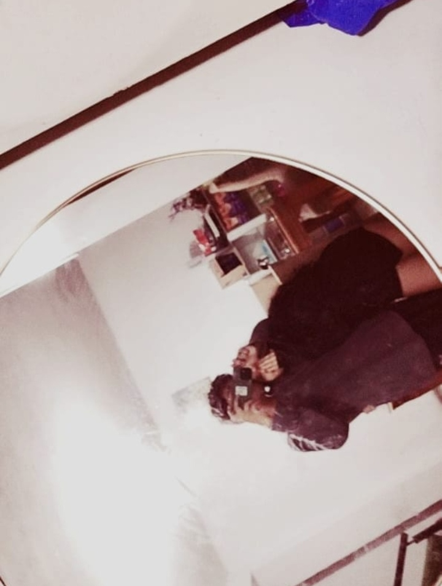
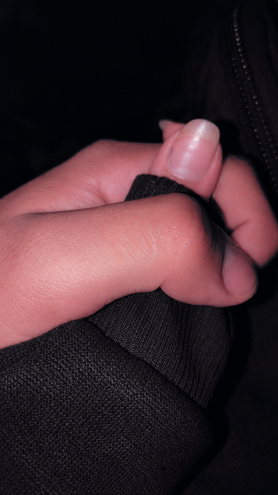
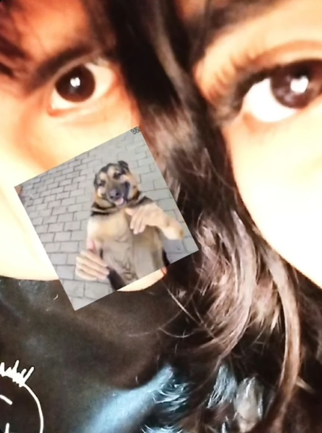

01 · Algo que quiero decirte
Una carta para ti
Valezka, no sé exactamente cómo empezar esta carta, porque cuando se trata de ti tengo muchas cosas en la cabeza y, al mismo tiempo, a veces no encuentro las palabras necesarias para expresarlas.
Quería hacerte algo diferente, algo que no fuera simplemente un mensaje que lees y después queda perdido entre tantas conversaciones. Quería preparar un espacio donde pudiera dejar algunas cosas que pienso, recuerdos que guardo y sentimientos que quizás no siempre sé demostrarte.
Desde que llegaste a mi vida han pasado muchas cosas que, aunque algunas parezcan simples, para mí tienen un significado especial. Me gusta recordar cómo empezamos, nuestras salidas, las conversaciones, las bromas y hasta esas situaciones inesperadas que terminan convirtiéndose en anécdotas.
No voy a decirte que soy perfecto, porque sé que tengo mis defectos. A veces puedo ser complicado, pensar demasiado, quedarme callado o no saber cómo explicar lo que me pasa. Pero estoy intentando aprender a comunicarme mejor y a demostrar lo que siento de una manera más clara.
Quiero que sepas que no veo lo nuestro como algo que simplemente está pasando por pasar. Me importa conocerte, entenderte, compartir contigo y seguir descubriendo cómo somos cuando estamos juntos.
Me gustaría que podamos tener muchísimas experiencias más, conocer lugares, tomarnos fotografías, reírnos por tonterías y crear recuerdos que dentro de algunos años podamos recordar con una sonrisa.
No quiero prometerte una historia perfecta. Prefiero demostrarte con el tiempo que mis intenciones son sinceras y que quiero cuidar lo que estamos construyendo.
Con mucho cariño, para ti. 💜
02 · Cosas que guardo en mi memoria
Nuestros recuerdos
Hay momentos que quizá para ti no sean tan importantes o que ni siquiera recuerdes de la misma manera que yo, pero que se quedaron guardados en mi cabeza. No son grandes acontecimientos, son esas pequeñas cosas que hacen que nuestra historia sea nuestra.
Me acuerdo de cuando te pregunté si querías ser mi enamorada en el cine. De los nervios que tenía y de lo especial que fue ese momento para mí. También recuerdo cuando te cargué sobre mis hombros y empezaste a gritar. No sé por qué, pero cada vez que me acuerdo de eso me da risa.
Me acuerdo de tus expresiones, de las caras que haces y de esas ocurrencias tuyas que aparecen de la nada. Son detalles que me gustan porque hacen que cualquier momento contigo tenga algo distinto. A veces haces cosas tan inesperadas que no sé si reírme, sorprenderme o simplemente quedarme mirándote.
Y cómo olvidarme de cuando compartiste tu Quaker con ese pan que ya habías mordido. Puede parecer una tontería, pero justamente esas cosas tan particulares son las que terminan quedándose en mi memoria.
También recuerdo nuestra primera salida, que terminó siendo en un velorio. Definitivamente no fue el plan que alguien imaginaría para una primera salida, pero así empezó otra parte de nuestra historia. Supongo que no siempre necesitamos que las cosas salgan como las planeamos para que terminen siendo memorables.
Me acuerdo de la primera vez que te vi. Me costaba mirarte directamente a los ojos y estaba bastante nervioso. Lo curioso es que, incluso después de todo este tiempo, todavía hay ocasiones en las que consigues ponerme nervioso.
También me gusta recordar cuando compartimos tiempo con tu familia. Para mí es importante conocer a las personas que forman parte de tu vida y entender un poco más de dónde vienes, qué cosas valoras y quiénes son importantes para ti.
Podría seguir mencionando un montón de momentos, pero creo que lo bonito es que todavía nos quedan muchos por vivir. No quiero que esta sección sea solamente una lista de cosas que ya pasaron; quiero que algún día podamos volver aquí y recordar también todo lo que todavía nos falta experimentar.
03 · Lo que veo en ti
Lo que me gusta de ti
Hay muchas cosas que me gustan de ti y no todas tienen que ver con tu apariencia. Claro que me pareces bonita, pero sería quedarme demasiado corto si solamente hablara de eso.
Me gusta tu forma de expresarte, tus gestos, tus ocurrencias y la manera en que puedes cambiar el ambiente de un momento con alguna de tus bromas. Me gusta cuando eres espontánea y cuando haces esas expresiones que probablemente ni siquiera notas que haces.
Me gusta escucharte hablar, incluso cuando me cuentas cosas que parecen no tener mucha importancia. Me interesa saber cómo estuvo tu día, qué te preocupa, qué te emociona y qué cosas pasan por tu cabeza.
También me gusta tu forma de ser con las personas que quieres. Me gusta conocer a tu familia y entender lo importante que es para ti. Son cosas que me permiten conocerte más allá de los momentos que compartimos solamente nosotros dos.
Quiero que conmigo puedas sentirte tranquila, que puedas hablar de lo que te pasa y que no tengas que fingir estar bien cuando no lo estás. No siempre voy a tener la respuesta correcta, pero sí quiero aprender a escucharte y entenderte.
Me gusta que seas tú. Con tus días buenos, tus días complicados, tus bromas, tus enojos, tus ocurrencias y todas esas cosas que forman parte de tu personalidad.
Y si hay algo que quiero que tengas presente es que no tienes que convertirte en alguien diferente para que yo quiera estar contigo. Me interesa conocerte tal como eres y que podamos crecer juntos sin dejar de ser nosotros mismos.
04 · Momentos capturados
Nuestras fotografías
Algunos momentos que quiero conservar. Ojalá esta galería se vaya llenando de muchas más fotografías y experiencias juntos.



05 · Una canción para ti
CANCION QUE ME HACE RECORDARTE
Hay canciones que, por alguna razón, terminan haciéndonos pensar en una persona. Quise poner esta aquí porque quería que también formara parte de este detalle que preparé para ti.
Eres
Una canción para tiPulsa reproducir para escuchar la canción.
Me encantaria poder subir mas canciones pero no puedo p UnU
06 · Antes de que te vayas
Hay algo más que quiero decirte
Tengo un montón de cartas que todavía no te entrego. Siempre que iba a verte pensaba en dártelas y luego irme, porque la verdad siempre me ha dado vergüenza.
A veces pienso que son una tontería, quizá porque siempre lo he visto así, pero para mí tienen mucho significado. Quisiera entregártelas la próxima vez que vaya.
Sé que hay personas que piensan que solo estoy contigo para un rato y así. Hasta tu mamá puede que piense eso un poquito.
No tengo una manera exacta de demostrarlo con palabras, pero te puedo asegurar que lo que siento es sincero. Nunca tendría la intención de hacerte daño. No soy esa clase de persona y jamás quisiera convertirme en alguien que te haga sufrir.
Ojalá podamos seguir juntos y que pueda demostrártelo día con día. No quiero que todo se quede en palabras bonitas escritas en una página. Quiero que también puedas verlo en mi manera de tratarte, en el tiempo que te dedico y en las decisiones que tomo.
Quiero que tengamos la confianza de contarnos las cosas, de hablar cuando algo nos incomode y de no dejar que los malos entendidos se hagan más grandes por no saber comunicarnos. Sé que todavía tenemos mucho por aprender el uno del otro, y me gustaría que podamos hacerlo juntos.
Perdón si estuve un poco raro. A veces me pierdo en mis pensamientos y no sé cómo expresar lo que me pasa. No siempre encuentro las palabras en el momento adecuado, pero eso no significa que no me importes.
Me gustaría seguir compartiendo contigo los días normales, los días especiales, las salidas improvisadas, las conversaciones largas y hasta esos momentos en los que no hacemos absolutamente nada.
Gracias por formar parte de mi vida y por todos esos momentos que, aunque parezcan sencillos, significan bastante para mí.
Pero no dudes que en ningún momento he dejado de quererte.
Con todo mi cariño, para ti, Valezka. 💜